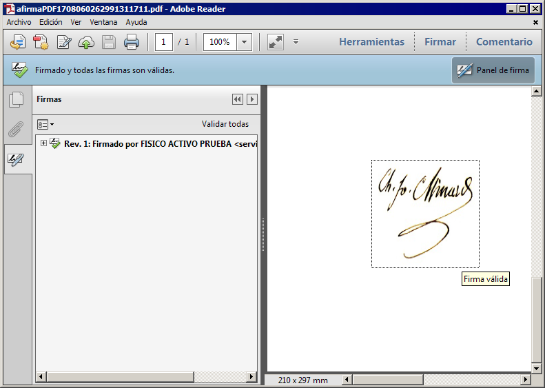
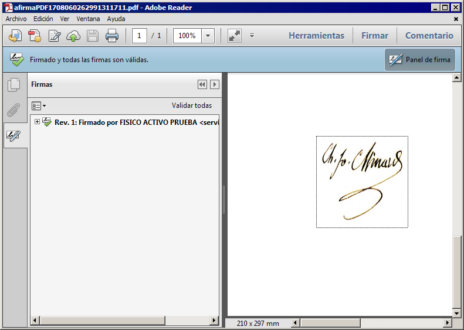
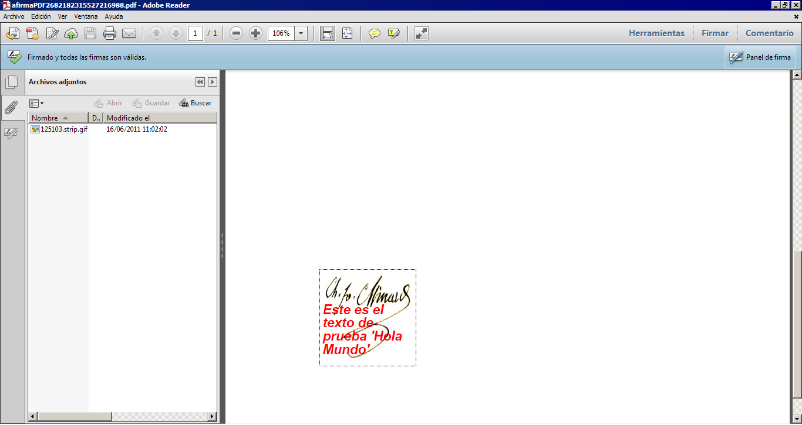

<
<
Esta obra está bajo una licencia Creative Commons Reconocimiento-NoComercial-CompartirIgual 3.0 Unported.
-
Índice
1 Introducción [3](#introducción)
3.1 Uso de las firmas PDF desde el cliente @firma [6](#uso-de-las-firmas-pdf-desde-el-cliente-firma)
3.2 Parámetros de funcionamiento [8](#parámetros-de-funcionamiento)
3.2.1 Documentos PDF cifrados o protegidos con contraseña [8](#_Toc401046644)
3.2.2 Metadatos adicionales en los PDF firmados [9](#metadatos-adicionales-en-los-pdf-firmados)
3.2.3 PDF con rúbrica [9](#pdf-con-rúbrica)
3.2.4 Cofirmas en PDF (Firmas en serie) [12](#_Toc401046647)
3.2.5 Contrafirmas en PDF [13](#contrafirmas-en-pdf)
3.3 Información de utilidad [13](#información-de-utilidad)
Introducción
El Cliente de Firma es una herramienta de Firma Electrónica que funciona en forma de Applet de Java integrado en una página Web mediante JavaScript.
El Cliente hace uso de los certificados digitales X.509 y de las claves privadas asociadas a los mismos que estén instalados en el repositorio o almacén de claves y certificados (keystore) del navegador web (Internet Explorer, Mozilla, Firefox) o el sistema operativo así como de los que estén en dispositivos (tarjetas inteligentes, dispositivos USB) configurados en el mismo (el caso de los DNI-e).
El Cliente de Firma, como su nombre indica, es una aplicación que se ejecuta en cliente (en el ordenador del usuario, no en el servidor Web). Esto es así para evitar que la clave privada asociada a un certificado tenga que “salir” del contenedor del usuario (tarjeta, dispositivo USB o navegador) ubicado en su PC. De hecho, nunca llega a salir del navegador, el Cliente le envía los datos a firmar y éste los devuelve firmados.
El Cliente de Firma contiene las interfaces y componentes web necesarios para la realización de los siguientes procesos (además de otros auxiliares como cálculos de hash, lectura de ficheros, etc…):
-
Firma de formularios Web.
-
Firma de datos y ficheros.
-
Multifirma masiva de datos y ficheros.
-
Cofirma (CoSignature) Multifirma al mismo nivel.
-
Contrafirma (CounterSignature) Multifirma en cascada.
Como complemento al cliente de firma, se encuentra un cliente de cifrado que nos permite realizar las funciones de encriptación y desencriptación de datos atendiendo a diferentes algoritmos y configuraciones. Además permite la generación de sobres digitales.
Objetivos
El objetivo del presente documento es reflejar las capacidades del Cliente @firma en cuanto a firmas electrónicas de documentos PDF (Portable Document Format), las peculiaridades de este relativas a este formato, sus opciones de configuración y su compatibilidad.
Formato de firma PDF (Portable Document Format)
El cliente soporta firmas en formato PDF / ISO 32000-1 mediante algoritmo RSA y huellas digitales según algoritmos SHA-1 y SHA-2, de forma acorde a las especificaciones de Adobe. Este tipo de firma consiste, básicamente, en la inclusión de una estructura de firma CAdES en un espacio reservado dentro del documento PDF que se firma.
Las firmas de los documentos PDF realizadas por el cliente no son visibles directamente, es decir, no tienen representación gráfica dentro del documento.
Soporte de firmas PDF Avanzadas (PAdES)
La versión actual del Cliente @firma genera firmas electrónicas compatibles con la especificación PAdES (http://pda.etsi.org/pda/) de un modo completamente compatible con la versión 9.3.2 de Adobe Reader y con la normativa ISO 32000-1. Todas las firmas PDF realizadas por el Cliente son simultáneamente compatibles con la normativa ISO 32000-1 y el estándar PAdES.
Las firmas electrónicas introducidas pueden generarse como PAdES-Básicas (firmas avanzadas básicas) o PAdES-EPES (firmas avanzadas acordes a política), siendo necesario en este último caso introducir los datos de la política de firma tal y como se describe en la documentación general del Cliente @firma (JavaDoc del Applet y apartado 8.5.4 del Manual del Integrador):
setPolicy(String identifier, String description, String qualifier, String hashB64)
A nivel técnico, los datos de firma electrónica empotrados dentro de la estructura PDF equivalen a una firma CAdES. En caso de firmarse con un algoritmo de firma con huella digital SHA1, la firma incluirá el atributo firmado SigningCertificate (opción recomendada por el estándar para este algoritmo), mientras que con cualquier otro algoritmo se incluirá el atributo SigningCertificateV2.
Este comportamiento se puede variar indicando explícitamente si deseamos usar o no la versión 2 del atributo. Esto se hará mediante el método del Applet (que es posible invocar vía JavaScript): clienteFirma.addExtraParam(String paramName, String paramValue), y el siguiente uso:
clienteFirma.addExtraParam(“signingCertificateV2”, “true”);
Desde la invocación de este método todas las firmas PAdES que se realicen hasta el reinicio del Applet tendrán la forma V2 del atributo Signing Certificate. Si queremos restablecer el comportamiento normal de generación en la forma V1 debemos invocar el paso de parámetro adicional de este otra forma:
clienteFirma.addExtraParam(“signingCertificateV2”, “false”);
El Cliente no soporta la firma de adjuntos a los documentos PDF en ninguna variante ni formato. No obstante, si el Cliente detecta que un PDF contiene ficheros adjuntos o empotrados, imprimirá una advertencia en la consola Java.
Generación de PAdES-BES
Como se ha comentado anteriormente, las firmas generadas por defecto corresponden al formato PAdES-Básicas, lo cual quiere decir que la firma insertada en el PDF es compatible con CMS (Cryptographic Message Syntax) y se etiqueta en el diccionario PDF como adbe.pkcs7.detached.
No obstante, es posible forzar la creación de firmas PAdES-BES, que se diferencian de las PAdES-Básicas en que la firma es compatible con CAdES y se etiqueta en el diccionario PDF como ETSI.CAdES.detached.
Para realizar esto es necesario indicar este valor de etiqueta en el parámetro adicional signatureSubFilter, lo cual puede hacerse desde el Cliente @firma mediante la siguiente sentencia JavaScript:
clienteFirma.addExtraParam(“signatureSubFilter”, “ETSI.CAdES.detached”);
Soporte de PDF Cifrados o protegidos con contraseña
El Cliente @firma soporta la firma de ficheros PDF cifrados o protegidos con contraseña, con las siguientes excepciones:
-
No se soporta el algoritmo de cifrado AES256 ni otros algoritmos introducidos posteriormente a la aceptación de este en la normativa PDF y el en programa Adobe Acrobat / Adobe Reader.
-
No se soportan cifrados basados en certificados digitales.
En este sentido, el módulo permite establecer ciertos comportamientos por defecto, consulte con la documentación JavaDoc para mayor información (clase es.gob.afirma.signers.pades.AOPDFSigner), especialmente si realiza firmas PDF en modos no interactivos (firmas por lotes / firmas masivas).
Uso de las firmas PDF desde el cliente @firma
-
El formato de firma PDF está únicamente disponible en la construcción Completa del cliente de firma.
Para realizar una firma en este formato sólo es necesario configurarlo como formato de firma mediante el método del Applet cliente:
setSignatureFormat(String format)
Puede llamarse a esta función desde las páginas Web que integren el cliente por medio de la sentencia JavaScript:
clienteFirma.setSignatureFormat(String format)
Esto configurará el cliente de firma para realizar firmas PDF, siendo necesario también completar la configuración del cliente que se considere necesaria (algoritmo de firma, tratamiento de errores,…), establecer los datos que se desean firmar (no es posible realizar firmas PDF a partir del hash de un documento) y ordenar el proceso de firma.
Creación de una firma visible
El Applet Cliente @firma permite la creación de firmas visibles dentro de un documento PDF, que son lo son tanto en pantalla (por ejemplo, usando Adobe Reader) como en papel una vez impreso el documento.
<
Para ello debemos indicar, mediante parámetros adicionales, la página en donde situar la visualización de la firma (solo puede haber una, en una única página) y sus coordenadas dentro de esta.
Las coordenadas de la visualización se indican partiendo de la esquina inferior izquierda, según el siguiente diagrama:
<
Estas coordenadas, así como la página de inserción se establecen usando los parámetros adicionales, por ejemplo:
signaturePositionOnPageLowerLeftX = 100
signaturePositionOnPageLowerLeftY = 100
signaturePositionOnPageUpperRightX = 200
signaturePositionOnPageUpperRightY = 200
signaturePositionOnPageUpperRightX = 200
signaturePage = 1
Los documentos PDF comienzan su numeración de páginas desde uno (1). Si se indica -666 como página se usa la última página del documento.
Dentro del recuadro marcado por las coordenadas indicadas, es posible mostrar distintos elementos:
<
-
Una imagen:
-
En este caso debe indicarse qué imagen a usar aportando el binario en formato JPEG codificado en Base64.
- signatureRubricImage = AGFGSFH…
-
La imagen de deforma para adaptarse a las dimensiones del recuadro marcado por las coordenadas, por lo que es importante que ambos tengan la misma relación de aspecto.
-
<
-
Texto (que puede combinarse con una imagen)
-
Es necesario indicar no solo el texto a sobreimprimir en el cuadro visible, sino también indicaciones sobre su formato (tipo de letra y su tamaño, color, etc.).
-
El texto introduce de forma automática los retornos de carro necesarios para adaptarse al recuadro.
-
El texto aparece siempre sobre la imagen indicada, si se indicó alguna.
-
Los parámetros para indicar el formato son:
layer2Text
Texto a escribir dentro de la firma visible.
Este texto se escribe únicamente si no se ha especificado una imagen de rúbrica, y necesita que se indique la página y la situación dónde mostrar el recuadro de firma mediante los parámetros signaturePositionOnPageLowerLeftX, signaturePositionOnPageLowerLeftY, signaturePositionOnPageUpperRightX, signaturePositionOnPageUpperRightY y signaturePage.
layer2FontFamily
Tipo de letra a usar en el texto de la firma visible. Este parámetro requiere que se haya establecido también el parámetro layer2Text. Los valores admitidos son:
-
0 = Courier (tipo por defecto)
-
1 = Helvética
-
2 = Times Roman
-
3 = Symbol
-
4 = ZapfDingBats
layer2FontSize
Tamaño de letra a usar en el texto de la firma visible. Este parámetro requiere que se haya establecido también el parámetro layer2Text.
Los valores admitidos son numéricos (y el valor por defecto es 12).
layer2FontStyle
Estilo del tipo de letra a usar en el texto de la firma visible. Este parámetro requiere que se haya establecido también el parámetro layer2Text.
Los valores admitidos son numéricos, correspondiendo:
-
0 = Normal (estilo por defecto)
-
1 = Negrita
-
2 = Cursiva
-
3 = Negrita y cursiva
-
4 = Subrayado
-
8 = Tachado
Es posible combinar estilos aplicando la operación lógica o sobre los valores numéricos a combinar.
layer2FontColor
Color del texto de la firma visible. Este parámetro requiere que se haya establecido también el parámetro layer2Text.
Los valores admitidos son textuales (se ignora entre mayúsculas y minúsculas), soportándose:
-
black = Negro (color por defecto)
-
white = Blanco
-
gray = Gris
-
lightGray = Gris claro
-
darkGray = Gris oscuro
-
red = Rojo
-
pink = Rosa
Inserción de una imagen en un documento PDF antes de ser firmado
Como ayuda principalmente a la inserción de Códigos Seguros de Validación (CSV), existe la capacidad de insertar una imagen en un documento PDF justo antes de que se produzca la firma.
Para ello, debemos indicar primero una página y una zona dentro de esta para insertar la imagen, usando para ello el mismo sistema de coordenadas descrito en la sección “12.1”, es decir, a partir de la esquina inferior izquierda. La imagen debe proporcionarse en formato JPEG codificado en Base64.
Para indicar la página, podemos usar su número (empezando a contar desde uno como primera página), usar -1 para referirnos a la última página del documento o 0 (cero) para insertar la imagen en todas las páginas.
Es importante recalcar que la imagen se deforma para adaptarse al recuadro marcado por las coordenadas, siendo útil para evitar este efecto que ambos tengan la misma relación de aspecto.
Igualmente, no se proporcionan funcionalidades de rotado, por lo que si se quiere insertar una imagen de lado (por ejemplo, en el margen de la página, esta debe venir rotada en origen.
Los parámetros adicionales a usar para la inserción de imágenes son:
image
Imagen que se desea insertar en el PDF antes de que este sea firmado. La imagen debe proporcionarse en formato JPEG codificado en Base64.
Si el documento ya contiene firmas es posible que se invaliden, por lo que conviene usarlo únicamente en documentos sin firmas previas.
imagePage
Página donde desea insertarse la imagen indicada mediante el parámetro image. La numeración de las páginas comienza en uno.
Si se indica -1 como número de página se inserta la imagen en la última página del documento. Si se indica 0 como número de página se inserta la imagen en todas las páginas del documento. Este parámetro es obligatorio, si no se indica una página válida no se insertará la imagen.
imagePositionOnPageLowerLeftX
Coordenada horizontal inferior izquierda de la posición de la imagen (indicada mediante el parámetro image) dentro de la página.
Es necesario indicar el resto de coordenadas de la imagen mediante los parámetros imagePositionOnPageLowerLeftY, imagePositionOnPageUpperRightX e imagePositionOnPageUpperRightY.
Es necesario indicar también una página de inserción en el parámetro imagePage.
imagePositionOnPageLowerLeftY
Coordenada vertical inferior izquierda de la posición de la imagen (indicada mediante el parámetro image) dentro de la página.
Es necesario indicar el resto de coordenadas de la imagen mediante los parámetros imagePositionOnPageLowerLeftX, imagePositionOnPageUpperRightX e imagePositionOnPageUpperRightY.
Es necesario indicar también una página de inserción en el parámetro imagePage.
imagePositionOnPageUpperRightX
Coordenada horizontal superior derecha de la posición de la imagen (indicada mediante el parámetro image) dentro de la página.
Es necesario indicar el resto de coordenadas de la imagen mediante los parámetros imagePositionOnPageLowerLeftX, imagePositionOnPageLowerLeftY e imagePositionOnPageUpperRightY.
Es necesario indicar también una página de inserción en el parámetro imagePage.
imagePositionOnPageUpperRightY
Coordenada vertical superior derecha de la posición de la imagen (indicada mediante el parámetro image) dentro de la página.
Es necesario indicar el resto de coordenadas de la imagen mediante los parámetros imagePositionOnPageLowerLeftX, imagePositionOnPageLowerLeftY e imagePositionOnPageUpperRightX.
Es necesario indicar también una página de inserción en el parámetro imagePage.
Parámetros de funcionamiento
- Cadena de identificación de formato (dos variantes aceptadas, se ignoran mayúsculas y minúsculas):
- "PDF" / "Adobe PDF"
-
Se ignorará cualquier indicación del modo de firma (implícito o explícito).
-
Los algoritmos de firma MD2withRSA o MD5withRSA no se soportan por estar obsoletos y ser inseguros.
-
Ficheros de entrada
- Adobe PDF / ISO 32000 (*.pdf)
- Ficheros de salida
- Adobe PDF / ISO 32000 (*.pdf)
A modo de ejemplo, la llamada para establecer el modo de funcionamiento de firmas PDF se usaría la siguiente llamada:
clienteFirma.setSignatureFormat(“PDF”);
Documentos PDF cifrados o protegidos con contraseña
El Cliente @firma permite firmar documentos PDF protegidos con contraseña, tanto con una protección de apertura (cifrado completo) como con una protección contra modificaciones.
Para firmar correctamente estos documentos se puede operar de dos formas:
-
Modo interactivo
- Si no hemos indicado una operación desatendida mediante el “parámetro adicional” headLess el propio Cliente @firma solicitará mediante diálogos gráficos las contraseñas necesarias al usuario.
-
Modo desatendido
-
Podemos proporcionar las contraseñas mediante “parámetros adicionales”, evitando de este modo los diálogos gráficos. Los parámetros que se pueden usar para este fin son:
-
ownerPassword
- Contraseña de apertura del documento. Si se proporciona para un documento que únicamente está protegido contra modificaciones resultará en un documento protegido contra apertura con esa misma contraseña.
-
userPassword
- Contraseña para la realización de modificaciones en el documento.
-
-
Por lo general, para garantizar la ausencia total de diálogos gráficos deberá usarse también el parámetro headLess con el valor true.
-
Metadatos adicionales en los PDF firmados
Los ficheros PDF firmados pueden incluir una serie de metadatos adicionales (que no están contenidos en la propia firma, sino en el diccionario de metadatos del PDF) acerca de la firma. En @firma, es posible establecer estos metadatos mediante el uso de “parámetros adicionales”.
Los “parámetros adicionales” admitidos en este sentido son:
- signReason
- Razón por la que se realiza la firma.
- signatureProductionCity
- Ciudad en la que se realiza la firma.
- signerContact
- Contacto del firmante, usualmente una dirección de coreo electrónico.
Las nombres de las propiedades deben escribirse tal y como figuran, respetando mayúsculas y minúsculas. Para más información sobre el establecimiento de “parámetros adicionales” en @firma consulte con el Manual del Integrador.
Para el establecimiento programático desde Java de parámetros adicionales consulte con el JavaDoc.
PDF con rúbrica
Es posible insertar una representación gráfica de firma en los documentos PDF. Esta representación sólo puede aparecer en una página del PDF y puede ser una imagen establecida por el integrador, muy útil para agregar la rúbrica de la firma del usuario si se debe imprimir el documento, o un texto. En @firma, es posible configurar este comportamiento mediante los “parámetros adicionales”.
Concretamente, los parámetros que existen para configurar la representación gráfica de la firma son:
- signaturePage
- Página del documento PDF donde insertar la firma.
Este parámetro se ignora si se ha establecido valor al parámetro signatureField, y necesita que se establezcan valores válidos a los parámetros signaturePositionOnPageLowerLeftX, signaturePositionOnPageLowerLeftY, signaturePositionOnPageUpperRightX y signaturePositionOnPageUpperRightY.
- signaturePositionOnPageLowerLeftX
- Coordenada horizontal inferior izquierda de la posición del recuadro
visible de la firma dentro de la página.
Es necesario indicar el resto de coordenadas del recuadro mediante los parámetros signaturePositionOnPageLowerLeftY, signaturePositionOnPageUpperRightX y signaturePositionOnPageUpperRightY.
Si no se indica una página en el parámetro signaturePage la firma se inserta en la última página del documento.
- signaturePositionOnPageLowerLeftY
- Coordenada vertical inferior izquierda de la posición del recuadro
visible de la firma dentro de la página.
Es necesario indicar el resto de coordenadas del recuadro mediante los parámetros signaturePositionOnPageLowerLeftX, signaturePositionOnPageUpperRightX y signaturePositionOnPageUpperRightY.
Si no se indica una página en el parámetro signaturePage la firma se inserta en la última página del documento.
- signaturePositionOnPageUpperRightX
- Coordenada horizontal superior derecha de la posición del recuadro
visible de la firma dentro de la página.
Es necesario indicar el resto de coordenadas del recuadro mediante los parámetros signaturePositionOnPageLowerLeftX, signaturePositionOnPageLowerLeftY y signaturePositionOnPageUpperRightY.
Si no se indica una página en el parámetro signaturePage la firma se inserta en la última página del documento.
- signaturePositionOnPageUpperRightY
- Coordenada vertical superior derecha de la posición del recuadro
visible de la firma dentro de la página.
Es necesario indicar el resto de coordenadas del recuadro mediante los parámetros signaturePositionOnPageLowerLeftX, signaturePositionOnPageLowerLeftY y signaturePositionOnPageUpperRightX.
Si no se indica una página en el parámetro signaturePage la firma se inserta en la última página del documento.
- signatureRubricImage
- Imagen JPEG codificada en Base64 de la rúbrica de la firma manuscrita que se desea aparezca como firma visible en el PDF.
- layer2Text
- Texto a escribir dentro de la "capa 2" de la firma visible.
Este texto se escribe únicamente si no se ha especificado una imagen de rúbrica, y necesita que se indique la página y la situación dónde mostrar el recuadro de firma mediante los parámetros signaturePositionOnPageLowerLeftX, signaturePositionOnPageLowerLeftY, signaturePositionOnPageUpperRightX, signaturePositionOnPageUpperRightY y signaturePage.
- layer2FontFamily
- Tipo de letra a usar en el texto de la "capa 2" de la firma visible.
Este parámetro requiere que se haya establecido también el parámetro
layer2Text.
Los valores admitidos son numéricos, correspondiendo:
-
0 = Courier (tipo por defecto)
-
1 = Helvética
-
2 = Times Roman
-
3 = Symbol
-
4 = ZapfDingBats
- layer2FontSize
- Tamaño de letra a usar en el texto de la "capa 2" de la firma
visible. Este parámetro requiere que se haya establecido también el
parámetro layer2Text.
Los valores admitidos son numéricos (y el valor por defecto es 12).
- layer2FontStyle
- Estilo del tipo de letra a usar en el texto de la "capa 2" de la
firma visible. Este parámetro requiere que se haya establecido
también el parámetro layer2Text.
Los valores admitidos son numéricos, correspondiendo:
-
0 = Normal (estilo por defecto)
-
1 = Negrita
-
2 = Cursiva
-
3 = Negrita y cursiva
-
4 = Subrayado
-
8 = Tachado
Es posible combinar estilos aplicando la operación lógica o sobre los valores numéricos a combinar.
- layer2FontColor
- Color del texto de la "capa 2" de la firma visible. Este parámetro
requiere que se haya establecido también el parámetro layer2Text.
Los valores admitidos son textuales (se ignora entre mayúsculas y minúsculas), soportándose:
-
black = Negro (color por defecto)
-
white = Blanco
-
gray = Gris
-
lightGray = Gris claro
-
darkGray = Gris oscuro
-
red = Rojo
-
pink = Rosa
Cofirmas en PDF (Firmas en serie)
Los documentos PDF pueden ser “multifirmados” mediante el módulo, pero debe observarse la siguientes peculiaridades:
- Las cofirmas PDF son en realidad múltiples firmas aplicadas sobre un mismo documento sobre el que se crean revisiones, con el siguiente funcionamiento:
-
La primera firma aplicada aplica al documento original.
-
La segunda firma crea una nueva revisión del documento, que contiene el documento original más la primera firma, y esta la revisión firmada.
-
Cada firma adicional crea una nueva revisión que contiene tanto el documento original como las firmas anteriores.
-
Una cofirma PDF, responde más al concepto de documento “multifirmado” que al concepto de cofirma aplicado a firmas CMS o XMLDSig, ya que internamente el PDF no contiene una única estructura PKCS#7 con las firmas / cofirmas, sino varias estructuras PKCS#7.
-
El formato PDF permite, tras una firma digital, sellar el documento para evitar que se añada contenido adicional tras la firma. Dado que esto evitaría la posibilidad de añadir nuevas firmas, el módulo no sella los documentos, posibilitando la anexión de nuevo contenido al documento.
- No obstante, la primera firma aplicará únicamente al contenido original, aspecto que se indicará (por el programa Adobe Reader) como advertencia. Este aspecto en absoluto invalida la firma.
-
El formato PDF permite reservar espacio para firmas de modo que no sea necesario anexar contenido al añadir firmas digitales adicionales (tras una primera firma), ya que estas se alojan en estos espacios reservados. Pero dado que es necesario determinar a priori el número de espacios a reservar (uno por cada firma digital adicional a la primera) y que el cliente carece de esta información, no se reserva ningún espacio. Cada firma adicional a la primera supone un contenido anexado al documento.
-
Al ser las firmas adicionales a la primera contenido anexo, no existente en el momento de realizar la primera operación de firma, esta no las reflejará, indicando mediante una advertencia que se ha añadido contenido adicional, pero igualmente informando que el contenido firmado no ha sufrido alteraciones.
-
El cliente no puede cofirmar documentos PDF sellados.
-
No es posible realizar cofirmas a partir de un hash.
NOTA IMPORTANTE: No todos los documentos PDF permiten añadir firmas adicionales una vez se ha completado y cerrado el proceso de la primera firma. El añadir firmas adicionales en un documento PDF que no está preparado para ello puede invalidar la primera firma.
El cliente @Firma firma siempre los documentos de forma que sea posible añadir firmas adicionales sin que ninguna quede invalidada, pero otros productos (por ejemplo Adobe Acrobat) no permiten esta opción.
Antes de cofirmar un documento PDF cerciórese de que éste admite firmas adiciones. Si no está seguro de esta característica compruebe, tras añadir las firmas adicionales, si alguna firma se ha invalidado y en ese caso descarte el documento generado.
Contrafirmas en PDF
El módulo de firmas PDF no soporta contrafirmas.
Información de utilidad
-
Información sobre el formato PDF: http://www.adobe.com
-
Normativa PKCS#7: http://www.rsa.com/rsalabs/node.asp?id=2129
Glosario de términos
Firma electrónica
Es el conjunto de datos, en forma electrónica, anejos a otros datos electrónicos o asociados funcionalmente con ellos, utilizados como medio para identificar formalmente al autor o a los autores del documento que la recoge.
XML Digital Signature (XMLDSig)
Es una recomendación del W3C que define una sintaxis XML para la firma digital
XML Advanced Signature (XAdES)
Es un conjunto de extensiones a las recomendaciones XML-DSig haciéndolas adecuadas para la firma electrónica avanzada.
RSA
Es un sistema criptográfico de clave pública desarrollado en 1977. En la actualidad, RSA es el primer y más utilizado algoritmo de este tipo y es válido tanto para cifrar como para firmar digitalmente.
XML
Es un metalenguaje extensible de etiquetas desarrollado por el World Wide Web Consortium (W3C). Es una simplificación y adaptación del SGML y permite definir la gramática de lenguajes específicos (de la misma manera que HTML es a su vez un lenguaje definido por SGML). Por lo tanto XML no es realmente un lenguaje en particular, sino una manera de definir lenguajes para diferentes necesidades. Algunos de estos lenguajes que usan XML para su definición son XHTML, SVG, MathML.
Office Open XML (OOXML)
Es un formato de archivo abierto y estándar cuyas extensiones más comunes son .docx, .xlsx y .pptx. Se le utiliza para representar y almacenar hojas de cálculo, diagramas, presentaciones y documentos de texto. Un archivo Office Open XML contiene principalmente datos basados en el lenguaje de marcado XML, comprimidos en un contenedor .zip específico.
Open Document Format (ODF)
Es un formato de fichero estándar para el almacenamiento de documentos ofimáticos tales como hojas de cálculo, memorandos, gráficas y presentaciones. Aunque las especificaciones fueron inicialmente elaboradas por Sun, el estándar fue desarrollado por el comité técnico para Open Office XML de la organización OASIS y está basado en un esquema XML inicialmente creado e implementado por la suite ofimática OpenOffice.org (ver OpenOffice.org XML).
ZIP
Es un formato de almacenamiento sin pérdida, muy utilizado para la compresión de datos como imágenes, programas o documentos.
Es un formato de almacenamiento de documentos, desarrollado por la empresa Adobe Systems. Este formato es de tipo compuesto (imagen vectorial, mapa de bits y texto).
SHA
Es un sistema de funciones hash criptográficas relacionadas de la Agencia de Seguridad Nacional de los Estados Unidos y publicadas por el National Institute of Standards and Technology (NIST). El primer miembro de la familia fue publicado en 1993 es oficialmente llamado SHA. Sin embargo, hoy día, no oficialmente se le llama SHA-0 para evitar confusiones con sus sucesores. Dos años más tarde el primer sucesor de SHA fue publicado con el nombre de SHA-1. Existen cuatro variantes más que se han publicado desde entonces cuyas diferencias se basan en un diseño algo modificado y rangos de salida incrementados: SHA-224, SHA-256, SHA-384, y SHA-512 (llamándose SHA-2 a todos ellos).
PKCS
Se refiere a un grupo de estándares de criptografía de claves públicas concebidos y publicados por los laboratorios de RSA en California. A RSA Security se le asignaron los derechos de licenciamiento para la patente de algoritmo de clave asimétrica RSA y adquirió los derechos de licenciamiento para muchas otras patentes de claves.
W3C
Es un consorcio internacional que produce recomendaciones para la World Wide Web. Está dirigida por Tim Berners-Lee, el creador original de URL (Uniform Resource Locator, Localizador Uniforme de Recursos), HTTP (HyperText Transfer Protocol, Protocolo de Transferencia de HiperTexto) y HTML (Lenguaje de Marcado de HiperTexto) que son las principales tecnologías sobre las que se basa la Web.
OpenOffice.org
es una suite ofimática libre (código abierto y distribución gratuita) que incluye herramientas como procesador de textos, hoja de cálculo, presentaciones, herramientas para el dibujo vectorial y base de datos. Está disponible para varias plataformas, tales como Microsoft Windows, GNU/Linux, BSD, Solaris y Mac OS X. Soporta numerosos formatos de archivo, incluyendo como predeterminado el formato estándar ISO/IEC OpenDocument (ODF), entre otros formatos comunes. A febrero de 2010, OpenOffice soporta más de 110 idiomas.
Base64
Es un sistema de numeración posicional que usa 64 como base. Es la mayor potencia de dos que puede ser representada usando únicamente los caracteres imprimibles de ASCII. Esto ha propiciado su uso para codificación de correos electrónicos, PGP y otras aplicaciones. Todas las variantes famosas que se conocen con el nombre de Base64 usan el rango de caracteres A-Z, a-z y 0-9 en este orden para los primeros 62 dígitos, pero los símbolos escogidos para los últimos dos dígitos varían considerablemente de unas a otras. Otros métodos de codificación como UUEncode y las últimas versiones de binhex usan un conjunto diferente de 64 caracteres para representar 6 dígitos binarios, pero éstos nunca son llamados Base64.
ASN.1
Es una norma para representar datos independientemente de la máquina que se esté usando y sus formas de representación internas. Es un protocolo de nivel de presentación en el modelo OSI.
Autoridad de Certificación (CA)
Es una entidad de confianza, responsable de emitir y revocar los certificados digitales o certificados, utilizados en la firma electrónica, para lo cual se emplea la criptografía de clave pública. Jurídicamente es un caso particular de Prestador de Servicios de Certificación.
Certificado Digital
Es un documento digital mediante el cual un tercero confiable (una autoridad de certificación) garantiza la vinculación entre la identidad de un sujeto o entidad y su clave pública.
Infraestructura de Clave Pública (PKI)
Es una combinación de hardware y software, políticas y procedimientos de seguridad que permiten la ejecución con garantías de operaciones criptográficas como el cifrado, la firma digital o el no repudio de transacciones electrónicas.
Creative Commons
Reconocimiento-NoComercial-CompartirIgual 3.0 Unported
Usted es libre de:
| < style="width:0.52083in;height:0.52083in" alt="share" /> | Compartir - copiar, distribuir, ejecutar y comunicar públicamente la obra |
|-----------|-------------------------------------------------------------|
| < style="width:0.52083in;height:0.52083in" alt="remix" /> | hacer obras derivadas |
style="width:0.52083in;height:0.52083in" alt="remix" /> | hacer obras derivadas |
Bajo las condiciones siguientes:
| < style="width:0.52083in;height:0.52083in" alt="by" /> | Atribución — Debe reconocer los créditos de la obra de la manera especificada por el autor o el licenciante (pero no de una manera que sugiera que tiene su apoyo o que apoyan el uso que hace de su obra). |
|-----------|-------------------------------------------------------------|
| < style="width:0.52083in;height:0.52083in" alt="nc" /> | NoComercial — No puede utilizar esta obra para fines comerciales. |
| <
style="width:0.52083in;height:0.52083in" alt="by" /> | Atribución — Debe reconocer los créditos de la obra de la manera especificada por el autor o el licenciante (pero no de una manera que sugiera que tiene su apoyo o que apoyan el uso que hace de su obra). |
|-----------|-------------------------------------------------------------|
| < style="width:0.52083in;height:0.52083in" alt="nc" /> | NoComercial — No puede utilizar esta obra para fines comerciales. |
| < style="width:0.52083in;height:0.52083in" alt="sa" /> | Compartir bajo la Misma Licencia — Si altera o transforma esta obra, o genera una obra derivada, sólo puede distribuir la obra generada bajo una licencia idéntica a ésta. |
style="width:0.52083in;height:0.52083in" alt="sa" /> | Compartir bajo la Misma Licencia — Si altera o transforma esta obra, o genera una obra derivada, sólo puede distribuir la obra generada bajo una licencia idéntica a ésta. |
Entendiendo que:
Renuncia — Alguna de estas condiciones puede no aplicarse si se obtiene el permiso del titular de los derechos de autor
Dominio Público — Cuando la obra o alguno de sus elementos se hallen en el dominio público según la ley vigente aplicable, esta situación no quedará afectada por la licencia.
Otros derechos — Los derechos siguientes no quedan afectados por la licencia de ninguna manera:
-
Los derechos derivados de usos legítimos u otras limitaciones reconocidas por ley no se ven afectados por lo anterior.
-
Los derechos morales del auto;
-
Derechos que pueden ostentar otras personas sobre la propia obra o su uso, como por ejemplo derechos de imagen o de privacidad.
Aviso — Al reutilizar o distribuir la obra, tiene que dejar muy en claro los términos de la licencia de esta obra. La mejor forma de hacerlo es enlazar a esta página.
Licencia
LA OBRA O LA PRESTACIÓN (SEGÚN SE DEFINEN MÁS ADELANTE) SE PROPORCIONA BAJO LOS TÉRMINOS DE ESTA LICENCIA PÚBLICA DE CREATIVE COMMONS (CCPL O LICENCIA). LA OBRA O LA PRESTACIÓN SE ENCUENTRA PROTEGIDA POR LA LEY ESPAÑOLA DE PROPIEDAD INTELECTUAL Y/O CUALESQUIERA OTRAS NORMAS QUE RESULTEN DE APLICACIÓN. QUEDA PROHIBIDO CUALQUIER USO DE LA OBRA O PRESTACIÓN DIFERENTE A LO AUTORIZADO BAJO ESTA LICENCIA O LO DISPUESTO EN LA LEY DE PROPIEDAD INTELECTUAL.
MEDIANTE EL EJERCICIO DE CUALQUIER DERECHO SOBRE LA OBRA O LA PRESTACIÓN, USTED ACEPTA Y CONSIENTE LAS LIMITACIONES Y OBLIGACIONES DE ESTA LICENCIA, SIN PERJUICIO DE LA NECESIDAD DE CONSENTIMIENTO EXPRESO EN CASO DE VIOLACIÓN PREVIA DE LOS TÉRMINOS DE LA MISMA. EL LICENCIADOR LE CONCEDE LOS DERECHOS CONTENIDOS EN ESTA LICENCIA, SIEMPRE QUE USTED ACEPTE LOS PRESENTES TÉRMINOS Y CONDICIONES.
1. Definiciones
- La obra es la creación literaria, artística o científica ofrecida bajo los términos de esta licencia.
-
En esta licencia se considera una prestación cualquier interpretación, ejecución, fonograma, grabación audiovisual, emisión o transmisión, mera fotografía u otros objetos protegidos por la legislación de propiedad intelectual vigente aplicable.
-
La aplicación de esta licencia a una colección (definida más adelante) afectará únicamente a su estructura en cuanto forma de expresión de la selección o disposición de sus contenidos, no siendo extensiva a éstos. En este caso la colección tendrá la consideración de obra a efectos de esta licencia.
-
El titular originario es:
-
En el caso de una obra literaria, artística o científica, la persona natural o grupo de personas que creó la obra.
-
En el caso de una obra colectiva, la persona que la edite y divulgue bajo su nombre, salvo pacto contrario.
-
En el caso de una interpretación o ejecución, el actor, cantante, músico, o cualquier otra persona que represente, cante, lea, recite, interprete o ejecute en cualquier forma una obra.
-
En el caso de un fonograma, el productor fonográfico, es decir, la persona natural o jurídica bajo cuya iniciativa y responsabilidad se realiza por primera vez una fijación exclusivamente sonora de la ejecución de una obra o de otros sonidos.
-
En el caso de una grabación audiovisual, el productor de la grabación, es decir, la persona natural o jurídica que tenga la iniciativa y asuma la responsabilidad de las fijaciones de un plano o secuencia de imágenes, con o sin sonido.
-
En el caso de una emisión o una transmisión, la entidad de radiodifusión.
-
En el caso de una mera fotografía, aquella persona que la haya realizado.
-
En el caso de otros objetos protegidos por la legislación de propiedad intelectual vigente, la persona que ésta señale.
-
Se considerarán obras derivadas aquellas obras creadas a partir de la licenciada, como por ejemplo: las traducciones y adaptaciones; las revisiones, actualizaciones y anotaciones; los compendios, resúmenes y extractos; los arreglos musicales y, en general, cualesquiera transformaciones de una obra literaria, artística o científica. Para evitar la duda, si la obra consiste en una composición musical o grabación de sonidos, la sincronización temporal de la obra con una imagen en movimiento (synching) será considerada como una obra derivada a efectos de esta licencia.
-
Tendrán la consideración de colecciones la recopilación de obras ajenas, de datos o de otros elementos independientes como las antologías y las bases de datos que por la selección o disposición de sus contenidos constituyan creaciones intelectuales. La mera incorporación de una obra en una colección no dará lugar a una derivada a efectos de esta licencia.
-
El licenciador es la persona o la entidad que ofrece la obra o prestación bajo los términos de esta licencia y le concede los derechos de explotación de la misma conforme a lo dispuesto en ella.
-
Usted es la persona o la entidad que ejercita los derechos concedidos mediante esta licencia y que no ha violado previamente los términos de la misma con respecto a la obra o la prestación, o que ha recibido el permiso expreso del licenciador de ejercitar los derechos concedidos mediante esta licencia a pesar de una violación anterior.
-
La transformación de una obra comprende su traducción, adaptación y cualquier otra modificación en su forma de la que se derive una obra diferente. La creación resultante de la transformación de una obra tendrá la consideración de obra derivada.
-
Se entiende por reproducción la fijación directa o indirecta, provisional o permanente, por cualquier medio y en cualquier forma, de toda la obra o la prestación o de parte de ella, que permita su comunicación o la obtención de copias.
-
Se entiende por distribución la puesta a disposición del público del original o de las copias de la obra o la prestación, en un soporte tangible, mediante su venta, alquiler, préstamo o de cualquier otra forma.
-
Se entiende por comunicación pública todo acto por el cual una pluralidad de personas, que no pertenezcan al ámbito doméstico de quien la lleva a cabo, pueda tener acceso a la obra o la prestación sin previa distribución de ejemplares a cada una de ellas. Se considera comunicación pública la puesta a disposición del público de obras o prestaciones por procedimientos alámbricos o inalámbricos, de tal forma que cualquier persona pueda acceder a ellas desde el lugar y en el momento que elija.
-
La explotación de la obra o la prestación comprende la reproducción, la distribución, la comunicación pública y, en su caso, la transformación.
2. Límites de los derechos. Nada en esta licencia pretende reducir o restringir cualesquiera límites legales de los derechos exclusivos del titular de los derechos de propiedad intelectual de acuerdo con la Ley de propiedad intelectual o cualesquiera otras leyes aplicables, ya sean derivados de usos legítimos, tales como la copia privada o la cita, u otras limitaciones como la resultante de la primera venta de ejemplares (agotamiento).
3. Concesión de licencia. Conforme a los términos y a las condiciones de esta licencia, el licenciador concede, por el plazo de protección de los derechos de propiedad intelectual y a título gratuito, una licencia de ámbito mundial no exclusiva que incluye los derechos siguientes:
- Derecho de reproducción, distribución y comunicación pública de la obra o la prestación.
-
Derecho a incorporar la obra o la prestación en una o más colecciones.
-
Derecho de reproducción, distribución y comunicación pública de la obra o la prestación lícitamente incorporada en una colección.
-
Derecho de transformación de la obra para crear una obra derivada siempre y cuando se incluya en ésta una indicación de la transformación o modificación efectuada.
-
Derecho de reproducción, distribución y comunicación pública de obras derivadas creadas a partir de la obra licenciada.
-
Derecho a extraer y reutilizar la obra o la prestación de una base de datos.
-
Para evitar cualquier duda, el titular originario:
-
Conserva el derecho a percibir las remuneraciones o compensaciones previstas por actos de explotación de la obra o prestación, calificadas por la ley como irrenunciables e inalienables y sujetas a gestión colectiva obligatoria.
-
Renuncia al derecho exclusivo a percibir, tanto individualmente como mediante una entidad de gestión colectiva de derechos, cualquier remuneración derivada de actos de explotación de la obra o prestación que usted realice.
Estos derechos se pueden ejercitar en todos los medios y formatos, tangibles o intangibles, conocidos en el momento de la concesión de esta licencia. Los derechos mencionados incluyen el derecho a efectuar las modificaciones que sean precisas técnicamente para el ejercicio de los derechos en otros medios y formatos. Todos los derechos no concedidos expresamente por el licenciador quedan reservados, incluyendo, a título enunciativo pero no limitativo, los derechos morales irrenunciables reconocidos por la ley aplicable. En la medida en que el licenciador ostente derechos exclusivos previstos por la ley nacional vigente que implementa la directiva europea en materia de derecho sui generis sobre bases de datos, renuncia expresamente a dichos derechos exclusivos.
4. Restricciones. La concesión de derechos que supone esta licencia se encuentra sujeta y limitada a las restricciones siguientes:
- Usted puede reproducir, distribuir o comunicar públicamente la obra o prestación solamente bajo los términos de esta licencia y debe incluir una copia de la misma, o su Identificador Uniforme de Recurso (URI). Usted no puede ofrecer o imponer ninguna condición sobre la obra o prestación que altere o restrinja los términos de esta licencia o el ejercicio de sus derechos por parte de los concesionarios de la misma. Usted no puede sublicenciar la obra o prestación. Usted debe mantener intactos todos los avisos que se refieran a esta licencia y a la ausencia de garantías. Usted no puede reproducir, distribuir o comunicar públicamente la obra o prestación con medidas tecnológicas que controlen el acceso o el uso de una manera contraria a los términos de esta licencia. Esta sección 4.a también afecta a la obra o prestación incorporada en una colección, pero ello no implica que ésta en su conjunto quede automáticamente o deba quedar sujeta a los términos de la misma. En el caso que le sea requerido, previa comunicación del licenciador, si usted incorpora la obra en una colección y/o crea una obra derivada, deberá quitar cualquier crédito requerido en el apartado 4.b, en la medida de lo posible.
- Si usted reproduce, distribuye o comunica públicamente la obra o la prestación, una colección que la incorpore o cualquier obra derivada, debe mantener intactos todos los avisos sobre la propiedad intelectual e indicar, de manera razonable conforme al medio o a los medios que usted esté utilizando:
-
El nombre del autor original, o el seudónimo si es el caso, así como el del titular originario, si le es facilitado.
-
El nombre de aquellas partes (por ejemplo: institución, publicación, revista) que el titular originario y/o el licenciador designen para ser reconocidos en el aviso legal, las condiciones de uso, o de cualquier otra manera razonable.
-
El título de la obra o la prestación si le es facilitado.
-
El URI, si existe, que el licenciador especifique para ser vinculado a la obra o la prestación, a menos que tal URI no se refiera al aviso legal o a la información sobre la licencia de la obra o la prestación.
-
En el caso de una obra derivada, un aviso que identifique la transformación de la obra en la obra derivada (p. ej., "traducción castellana de la obra de Autor Original," o "guión basado en obra original de Autor Original").
Este reconocimiento debe hacerse de manera razonable. En el caso de una obra derivada o incorporación en una colección estos créditos deberán aparecer como mínimo en el mismo lugar donde se hallen los correspondientes a otros autores o titulares y de forma comparable a los mismos. Para evitar la duda, los créditos requeridos en esta sección sólo serán utilizados a efectos de atribución de la obra o la prestación en la manera especificada anteriormente. Sin un permiso previo por escrito, usted no puede afirmar ni dar a entender implícitamente ni explícitamente ninguna conexión, patrocinio o aprobación por parte del titular originario, el licenciador y/o las partes reconocidas hacia usted o hacia el uso que hace de la obra o la prestación.
- Para evitar cualquier duda, debe hacerse notar que las restricciones anteriores (párrafos 4.a y 4.b) no son de aplicación a aquellas partes de la obra o la prestación objeto de esta licencia que únicamente puedan ser protegidas mediante el derecho sui generis sobre bases de datos recogido por la ley nacional vigente implementando la directiva europea de bases de datos
5. Exoneración de responsabilidad
A MENOS QUE SE ACUERDE MUTUAMENTE ENTRE LAS PARTES, EL LICENCIADOR OFRECE LA OBRA O LA PRESTACIÓN TAL CUAL (ON AN "AS-IS" BASIS) Y NO CONFIERE NINGUNA GARANTÍA DE CUALQUIER TIPO RESPECTO DE LA OBRA O LA PRESTACIÓN O DE LA PRESENCIA O AUSENCIA DE ERRORES QUE PUEDAN O NO SER DESCUBIERTOS. ALGUNAS JURISDICCIONES NO PERMITEN LA EXCLUSIÓN DE TALES GARANTÍAS, POR LO QUE TAL EXCLUSIÓN PUEDE NO SER DE APLICACIÓN A USTED.
6. Limitación de responsabilidad. SALVO QUE LO DISPONGA EXPRESA E IMPERATIVAMENTE LA LEY APLICABLE, EN NINGÚN CASO EL LICENCIADOR SERÁ RESPONSABLE ANTE USTED POR CUALESQUIERA DAÑOS RESULTANTES, GENERALES O ESPECIALES (INCLUIDO EL DAÑO EMERGENTE Y EL LUCRO CESANTE), FORTUITOS O CAUSALES, DIRECTOS O INDIRECTOS, PRODUCIDOS EN CONEXIÓN CON ESTA LICENCIA O EL USO DE LA OBRA O LA PRESTACIÓN, INCLUSO SI EL LICENCIADOR HUBIERA SIDO INFORMADO DE LA POSIBILIDAD DE TALES DAÑOS.
7. Finalización de la licencia
- Esta licencia y la concesión de los derechos que contiene terminarán automáticamente en caso de cualquier incumplimiento de los términos de la misma. Las personas o entidades que hayan recibido de usted obras derivadas o colecciones bajo esta licencia, sin embargo, no verán sus licencias finalizadas, siempre que tales personas o entidades se mantengan en el cumplimiento íntegro de esta licencia. Las secciones 1, 2, 5, 6, 7 y 8 permanecerán vigentes pese a cualquier finalización de esta licencia.
- Conforme a las condiciones y términos anteriores, la concesión de derechos de esta licencia es vigente por todo el plazo de protección de los derechos de propiedad intelectual según la ley aplicable. A pesar de lo anterior, el licenciador se reserva el derecho a divulgar o publicar la obra o la prestación en condiciones distintas a las presentes, o de retirar la obra o la prestación en cualquier momento. No obstante, ello no supondrá dar por concluida esta licencia (o cualquier otra licencia que haya sido concedida, o sea necesario ser concedida, bajo los términos de esta licencia), que continuará vigente y con efectos completos a no ser que haya finalizado conforme a lo establecido anteriormente, sin perjuicio del derecho moral de arrepentimiento en los términos reconocidos por la ley de propiedad intelectual aplicable.
8. Miscelánea
- Cada vez que usted realice cualquier tipo de explotación de la obra o la prestación, o de una colección que la incorpore, el licenciador ofrece a los terceros y sucesivos licenciatarios la concesión de derechos sobre la obra o la prestación en las mismas condiciones y términos que la licencia concedida a usted.
-
Cada vez que usted realice cualquier tipo de explotación de una obra derivada, el licenciador ofrece a los terceros y sucesivos licenciatarios la concesión de derechos sobre la obra objeto de esta licencia en las mismas condiciones y términos que la licencia concedida a usted.
-
Si alguna disposición de esta licencia resulta inválida o inaplicable según la Ley vigente, ello no afectará la validez o aplicabilidad del resto de los términos de esta licencia y, sin ninguna acción adicional por cualquiera las partes de este acuerdo, tal disposición se entenderá reformada en lo estrictamente necesario para hacer que tal disposición sea válida y ejecutiva.
-
No se entenderá que existe renuncia respecto de algún término o disposición de esta licencia, ni que se consiente violación alguna de la misma, a menos que tal renuncia o consentimiento figure por escrito y lleve la firma de la parte que renuncie o consienta.
-
Esta licencia constituye el acuerdo pleno entre las partes con respecto a la obra o la prestación objeto de la licencia. No caben interpretaciones, acuerdos o condiciones con respecto a la obra o la prestación que no se encuentren expresamente especificados en la presente licencia. El licenciador no estará obligado por ninguna disposición complementaria que pueda aparecer en cualquier comunicación que le haga llegar usted. Esta licencia no se puede modificar sin el mutuo acuerdo por escrito entre el licenciador y usted.